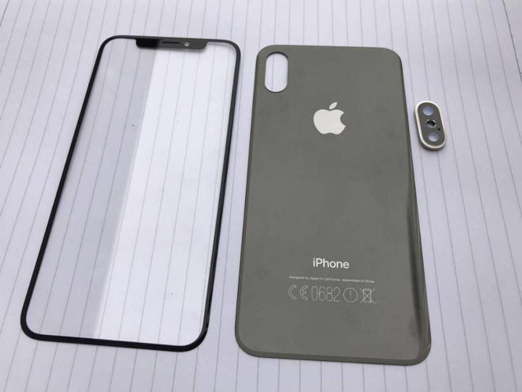
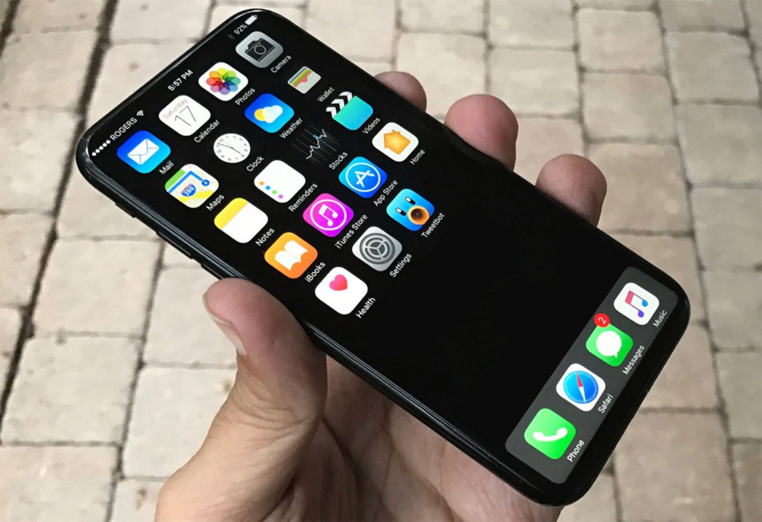

iPhone 8: ¿Diseño final? Olixar muestra sus fundas para el iPhone8

Por: Raúl Escamilla Guevara/Cursos Academia
@rulo_escamilla
Año tras año año, solemos ver al inicio de las ventas y, o reservas de fundas para los siguientes modelos de iPhone, antes de que estos se presenten de forma oficial. Pero en este caso la compañía de fundas y accesorios para los dispositivos móviles Olixar se adelanto bastante, dejando ver las fundas y protectores de pantalla para un nuevo modelo de iPhone.

Las fundas y protectores que ya están a la pre-venta en MobileFun para los usuarios de Estados Unidos, muestran claramente el diseño del que según ellos afirman será el siguiente iPhone 8, bajo el nombre de iPhone 8 Cases.
Es evidente que aún no hay nada confirmado ni desmentido por la propia compañía de Apple sobre este tema. Según explican a los medios, la creación de estas fundas se basa en la “información y esquemas que han obtenido a través de sus fábricas y contactos en el Lejano Oriente”.
Esta explicación puede ser cierta aunque las filtraciones le pueden salir caras a la marca Olixar en caso de no serlo, impidiendo que en los próximos años tengan acceso a los prototipos para crear sus accesorios debido a las filtraciones.

Podemos creer o no que estos sean realmente los nuevos iPhone 8 que todos esperamos, que sea o no el “Edición Especial 10 Aniversario”, el iPhone 7s o 7s Plus, etc. Pero lo que sí parece claro es que el diseño coincide demasiadas veces en estas filtraciones son todos absolutamente muy parecidos y está casi confirmado que un modelo de iPhone 2017 será así.